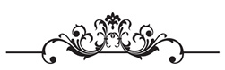
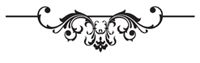
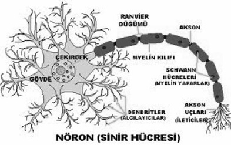
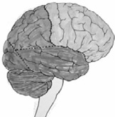
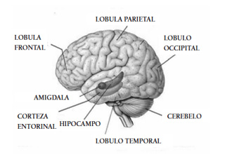
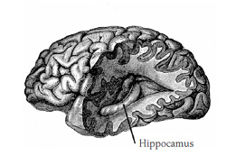

Evet, başlıyoruz. Yaşamımda değiştirmek istediğim birçok şey vardı. Bunların neler olduğunu biliyor fakat uygulayamıyordum. Neden diye kendime sorduğumda aniden sözlü sınava çağrılan hazırlıksız bir öğrenci gibi donup kalıyordum. Değiştirmek istediklerimin farkına vardım. Değişimin beyinde başlaması gerektiğini anladım. Beynim, düşüncelerime göre yaşamımı şekillendiren en büyük güçmüş.
Beyin ve Yaşam
Yaşadıklarımız; düşüncelerimiz ve onların içinden yaptığımız seçimler doğrultusunda gerçekleşiyor. Düşüncelerimiz dengeli bir zihin içinde; bir nehir gibi bazen coşkulu, bazen sakin bir biçimde akıp gidiyorsa, hayatımız da buna uygun biçimde şekil alıyor. Huzur dolu sağlıklı bir yaşam bizi sarıp sarmalıyor. Ancak düşüncelerimizde sıkıntı, takıntı ve endişeler yoğunsa hayatımız da sorunlu, sıkıntılı ve takıntılı oluyor. Yani zihnin karışık ve dağınıksa hayatın da genellikle öyle şekilleniyor.
Deneyimlemekte olduğun tüm olumsuz duyguların nedeni aslında bedeninin enerji sistemindeki bir aksaklığa aittir. Seni rahatsız eden tüm yaşanmışlıklar, enerji bedenindeki aksamalara neden olan tıkanıklıklardır. Söze dökülmemiş, eyleme geçmemiş her tür olumsuz düşünce ve duygu, enerji düzeyinde tıkanıklık ve aksamalara neden olur. Bedeninde doğru kanalı bulup, düzgün bir biçimde akamayan bu enerji; zihinsel, duygusal ya da bedensel rahatsızlıklara yol açıyor. Sen de her duruma “Hastayım” diye tepki veriyorsun.
Her ânın kendine özgü bir düşünce şekli var! Çünkü düşüncelerimiz gerçekleşmek üzere evrene yayılan enerji paketleridir. Canlı olan her şey gibi hareket halindedirler. Düşündüğün ama ifade etmediğin her şey, bir şekilde vardır. Düşündüğün ve söylediklerin evrende bir boyut yaratır. Senin gerçeğin olur. Düşüncelerine evrende büründüreceğin canlılığın gizemini öğrenerek bunu hayatına katabilirsen; yavaş yavaş bir değişim çıkar ortaya. Bundan sonra hayatında; olmaması gerekenler artık olmamaya, olması gerektiği halde olmayanlar ise kolayca olmaya başlarlar.
Bilirsin, “Bir insan yedisinde neyse, yetmişinde de odur” şeklinde bir atasözümüz var. İnsanı ne kadar da yanlış yönlendiren bir inanç…
“Değişmeliyim”,
“Değişebilirim”,
“Değişeceğim”,
“Değişiyorum”
“Değiştim” sözcüklerinin her birinin zihnimize verdiği mesajlar farklıdır. Her biri bir istemi ifade etse de, istemenin gücünü belirleyen en önemli ölçüt aksiyondur. Aksiyon gelecekte değil, şimdi de olandır.
Yaptığın şey, istediğin şeydir. Yapıyorsan, gerçekten istediğin içindir. Yapmıyorsan, yine istediğin şeyi yapıyorsun demektir. Yapmıyorsan, istemeyi bilmediğin ya da kimden isteyeceğini bilmediğin içindir.
Zihin ve beden mantığını kavrayarak istediğin yönde değişebilirsin. İstediğin kişi olabilirsin. İstediğin şeyleri, yapabilir ve alabilirsin.
Gezegenimizde olan, hayata geçirilen her şeyi beş nedene dayandırabiliriz.
Gerçekte ise yapılan şeylerin 3 ana nedeni vardır. Bunlar; dokunma, görme ve duymaya ilişkin verilerdir. Çoğunlukla insanlar bir şeyi sadece tadı veya kokusu doğru geldi diye yapmazlar. Düşünce süreçlerini öğrenerek; beyninden, insanlardan ve evrenden istemenin doğru biçimini otonom bir şekilde gerçekleştirebilirsin.
Bunun için önce beynin biyolojik yapısını, işleyiş düzenini ve bilinçaltının gücünü kullanabilmeyi öğrenmelisin. Biraz sabırla ve pratikle bunları kolayca öğrenebilirsin.
Çoğu insan öğrenme olayından korkar, çekinir ve uzak durur. Bunu bireysel geçmişimde ben de yaşadım ve hemen 3P önlemini aldım:
3P’nin açılımı şöyle;
Performans= Potansiyel - Parazitler.
Sen de zihnindeki parazitleri temizleyip sıfırladığında öğrenme gücünü keşfedeceksin. Bu kitabı okurken sana bir koçun eşlik ettiğini hissedecek ve bitirdiğinde sana eşlik eden koçun sen olduğunu fark edeceksin.
Her sözcüğün senin yararına bir seçim olduğunun farkına varacak ve bir başucu, başvuru kitabı olarak gittiğin her yere taşıyacaksın.
Şimdi kocaman bir kara delik saydığımız beyni en baştan ele alıp, sonunda da “Ben bir biyokimyasal enerji santralinin sahibiyim. Ben bir kimya fabrikatörüyüm. Ben bir terapi akademisinin yöneticisiyim. En önemlisi de bütün bunların yerleşkesi beynime artık hükmedebiliyorum” diyeceğimiz yolculuğa başlayalım.
Birkaç sayfa ile beynin evrimsel geçmişine bakmamızda yarar var.
Beynin Evrimsel Geçmişi
Hayatın incelikleri, bileşenlerinin hassas bir kompozisyonunda saklıdır! Yaşam, bileşenlerinden yola çıkarak tekrar oluşturulabilen bir organizasyon değil. Yaşam için iki vazgeçilmez ölçüt var: Birincisi kullanılabilir bir enerji, ikincisi de onun kimyasalları. Ayrıca ikisinin de kesintisiz akışının sağlanması gerekiyor. Bu yüzden yaşam, bir nehir gibi yol aldıkça oluşan ve değişen bir dinamik.
Yaşamın orijini bakteriyel bir oluşum. Bu bakteriyel gruba “Prokaryot” deniyor. Diğer tüm canlı türleri prokaryotların ekosistemlerini oluşturmasından sonra onlardan evrilmiş. Dünya üzerinde bugüne değin yaşamış olan paleontolojik kayıtların geçmişi yaklaşık 4 milyar yıl geriye gidiyor. Tüm türlerin muhtemelen % 99,9 u yok olmuş durumda.
Sadece biz HomoSapiensler, gelişen son beyin yapımız ve onun programları sayesinde dünyaya uyum sağlayarak hayatta kalmışız. Bu mükemmel başarıyı taçlandırmak, beynimizi etkin kullanarak mutlu bir hayat sürdürebilmemizle mümkün olacaktır.
Beynimiz evrimsel süreçte devamlı gelişen yama programlarla donanan bir organımızdır. Beynin 2 milyon yıllık bir geçmişi var. Buna karşın harika bir mekanizma geliştiren beynimizi her zaman etkin biçimde kullanamıyoruz.
Mevcut eğitim sisteminin bence en büyük zaafı da bu. Eğitim sisteminin önündeki en zorlu sınavı, evrimin bize verdiklerini en iyi şekilde değerlendirmek olacak diye düşünüyorum.
Beyin üzerindeki araştırmalar 1950’li yıllardan itibaren hızlanarak günümüze kadar devrim niteliğindeki buluşlarla süregelmiştir. 1960 başlarındaki bir çalışmada fanus içine alınan beyaz fareler bir gaz ile rahatsız ediliyor. Bu duruma alışan farelerin beyinleri dondurularak inceleniyor. Öğrendikleri deneyimlerini kalıtımda başlıca rol oynayan DNA benzeri maddelerle (RNA) sonraki döllere aktardıkları görülüyor.
Sonuç olarak DNA bir türün genetiğini, RNA ise canlının belleğini belirliyor.
1965 yılında yapılan bir araştırmada ise doğuştan gelen bazı özellikler değiştirildikten sonra yeni nesillere enjekte edilse, yeni döllerin bu özellikleri taşıyıp taşımayacakları denendi. Fareler ışıktan kaçarak karanlık yerleri tercih ederler. Araştırmada karanlık bölmeye elektrik, ışıklı bölgeye besin verilerek farelerin ışığa gitmeleri öğretildi. Bu farelerin beyinlerinden alınan RNA maddesinin özütleri yeni farelere enjekte edilince bu farelerin de ışığa gittikleri, karanlıktan kaçtıkları görüldü.
Sonuçta bellek kimyasal olarak bir canlıdan diğerine nakledilebilmişti. Yani öğrenilen yeni yetenekler RNA ile yeni nesillere aktarılıyordu.
Beyin 2 milyar yıl önce merkezi sinir sisteminin gelişmediği dönemlerde RNA’nın molekülleri yardımıyla maddeleşti. Beynin alt tabakalarında yatan bu jeolojik bellek birimleri üst beyin tarafından organize edilerek birey için en iyi organizasyon biçimine dönüştürüldü.
1970 yıllarında virüslerin evrimde ne denli önemli oldukları anlaşıldı. Virüsler ancak canlı bir hücrede bulunurlar. Bir virüs girdiği hücreye kendi kalıtsal materyalini bağlar. Hücrenin sentezleme programını bozarak, kendi sentezleme programını başlatır. Oluşan yeni virüsler yeni hücrelere girerek aynı işlemi tüm sisteme yayarlar. Böylece bir virüs tarafından saldırıya uğrayan hücre, eğer karşı bir savunma mekanizmasına sahipse o virüs tarafından getirilen DNA parçasını kendi amacı için kullanır.
Virüsler evrimde önemli bir nakil aracı görevi yaptılar. Bu durum tüm canlıların neden benzer genetik kodlara sahip olduklarını da açıklamış oldu.
Böylece bir organizmada kalıtsal olarak meydana gelen değişiklik veya ilerleme, tüm canlılar tarafından kullanılabilir hale gelmiş oluyordu. Yeni genetik buluşların kodlanmasıyla evrim hızlanmış, hatta sıçramalara neden olmuştu.
2000’li yıllardan sonra bilgisayar ve beyin arasındaki benzerlikten yola çıkılarak, cyborg teknolojisi ile beyin araştırmaları yapıldı. Deneyde farenin beynindeki hipokampus(Biraz sonra tanıyacağız) bölgesinden 1mm’lik bir kesit alıp buna ekledikleri bir çipi farenin beynine taktılar. Fare bir başka şehirdeki zorlu labirenti rahatça geçerek merdivenlerini kolayca tırmanabildi.
İsteyerek yaptığın bir hareketle görev olduğu için yaptığın bir hareketi ayırabilir miyiz? Evet! SPECT görüntüleme tekniği beyinde bu farklılığı ayırt edebiliyor. Beynin standart; nükleer manyetik rezonans görüntüleme (MRI), bilgisayarlı tomografi görüntüleme (BT) ve bilgisayarlı tomografi olarak anılan, dijital bilgisayar görüntüsü (CAT) görüntülerinden daha ayrıntılı olarak bugün, SPECT adı verilen görüntüleme tekniği ile beyindeki nörolojik aktiviteler gözlenebiliyor.
İstekle yapılan hareketlerde beynin tüm ögeleri bir armoni içinde çalışıyor. Görev gereği istemsiz iş yapanların beyinlerindeki görüntülerde hemen bir asimetri göze çarpıyor. Bunlar genelde aşırı el yıkayan, aşırı kilit kontrolü yapan, karmaşık alışkanlıklara bağımlı olan, Alzheimer hastalığı olan, depresyonlu insanlar oluyor.
Eğer beynin doğru çalışıyorsa görünümünde de bir simetri ve uyum hemen kendini belli ediyor. NLPBUS© beyin egzersizleri ve tamamlayıcı beyin bakımı ile asimetrik, sorunlu bir beyin doğru çalışabilir, hasar görmüş bir beyin, geliştirilebilir.
Anlamak ve öğrenmek için kullandığımız beyni artık yakından tanıma zamanı…
Beynin Biyolojik Yapısı
Evrendeki en karmaşık ve tanıdıkça insana heyecan veren tek yapı beyindir. Doğduğunda bir insan beyni yaklaşık 350 - 400 gr, yetişkin bir insan beyini ise 1300-1400 gramdır. Doğduğunda bir maymunun beyni de yaklaşık 350 - 400 gramdır. Ancak ilginç olan, yetişkin bir maymunun beyni yine 350 - 400 gramdır. Anlaşılıyor ki, gelişip büyüyen ve nöron bağlantılarını arttıran sadece insan beynidir.

Beyin; bilgiyi işleme,
bilgiden yararlanma ve yeni fikirler
yaratma konularında, bir hazinedir

Beyin; bilgiyi işleme, bilgiden yararlanma ve yeni fikirler yaratma konularında, bir hazinedir. Beyin “Nöron” adı verilen yaklaşık 100 milyar sinir hücresinden oluşan bir yapıdır. Bu sayı samanyolu galaksisindeki yıldızların sayısına yakın bir değerdir.

Bir nöron hücresinin yapısı şekilde göründüğü gibidir. Her insan yaklaşık 100 milyar nöron hücresi ile dünyaya geliyorsa, aslında hepimiz eşit öğrenme potansiyeli ile dünyaya geliyoruz demektir. Farklılık sonradan beynimizi nasıl kullandığımızla ortaya çıkıyor.
Her nöron “ Dentrit” denilen uyarıcı sinyallerin alındığı bir giriş bölgesi ile uyarıları hücre gövdesinden alıp diğer hücrelere ileten çıkış bölgesi yani “Akson” yapılarından oluşuyor.
Nöronların temel görevi beynin verdiği kararlara uygun biyoelektrik sinyalleri dağıtmaktır. Uyarılan nöronlar şimşek çakması gibi bir hızla diğer nöronları uyararak nöron ağı oluştururlar. Her nöronun akson ucu elektrik kablolarındaki gibi “Miyelin Kılıf” adı verilen özel bir doku ile sarılarak izole edilmiş haldedir. Bu doku enerjinin doğru yolda, sabit hızda iletimini sağlar.
Bu kılıfın hasar gördüğü MS hastalarında sinyaller 10 kat daha yavaş iletilir. Sinyaller hasar görür. Nihayet sinyaller yanlış adreslere ulaştırılabilir. Bu yüzden birey istediği hareketi veya konuşmayı sağlıklı yapamayabilir.
Öğrenme; beyin dilinde nöron ağı oluşturmaktır. Bir nöron ağı, nöron hücreleri arasındaki Akson-Dentrit bağlantılarından oluşur.
Yeni doğan bir bebekteki nöron ağı oluşumu çok hızlı olduğundan öğrenme hızı da o denli hızlıdır. Öğrenme için gerekli donanımın alt yapısı işte bu dönemde oluşturulur. Bebek üç yaşına geldiğinde trilyonlarca nöron ağına sahip olarak sosyal, zekasal ve fiziksel gelişime hazır hale gelir. 3 ila 10 yaş arası evrede de çocuğun beyin aktivitesi ileriki yaşlara göre oldukça hızlıdır.
11 yaşından itibaren beyin bu kez, oluşmuş nöron ağlarına kullan ya da kaybet ilkesini uygular. Çocukluğunda sıklıkla tekrarladığı öğrenmelere ait nöronları geliştirip düzenlerken, kullanılmayan nöron ağlarını ise çözerek devre dışı bırakır.
Beynin bu uygulamasından sonra kalan nöronlardan oluşan çevrim ağı zarar görüyor mu? Hayır, kalan ağ sistemi çocuk için daima özel ve yeterli oluyor. Bu ilke, ileride beynine yeni ve gelişkin bir programın yüklenmesi sürecinde bize yol gösterecektir.
18 yaşındaki bir genci yasalarla yetişkin saydığımıza göre onların beyin gelişimleri acaba tamamlanmış mıdır? Hayır. Özellikle yönetici beyin, yani üst ön beynin gelişimi 25 yaşına kadar sürer. Ancak alkol-sigara ve kazalara bağlı hasarlar bunun dışındadır.
Beyin, hacim olarak tüm vücudun %2 sini kapsıyor ancak tüm enerjinin yaklaşık %25’ni tüketiyor. Beynin nasıl bir çalışma sistemi var ki, bu kadar küçük bir yapılanma ile tüm bedenin yaklaşık 1/4 enerjisini tüketebiliyor?
Çünkü beyin etkin biçimde çalışabilmek ve gerektikçe kendisini onarabilmek için sürekli bir enerji kaynağına, yani bir yakıta ihtiyaç duyar.
Beyin enerjisini üç yolla sağlıyor.Bunlar;
Oksijen
Beyin biyokimyasal elektrikle çalışır. Elektriğin en temel iki kaynağı oksijen ve glikozdur. Bol oksijen alan bir beyin daha etkin çalışır. Etkin çalıştıkça yeni öğrenme yolları oluşturur. Beyindeki bu yeni öğrenme yolları da zeka gelişimi olarak bireye yansır.
Her şey içimizde vardır. Dışarıda ne oluyorsa içimizde de o olur. Birçok meditasyon öğretisi de nefes egzersizlerine dayanır. Nefes yolu ile aldığın oksijen dolaşımdaki kan ile beynine taşınır. Oksijen olmadan nöronlardaki mitokondri olarak bilinen enerji santrali enerji üretemez. 10-15 saniye oksijen alamayan bir beyin derhal bilinçsiz hale gelir.
Bu nedenle beynine yeterli oksijen sağlamak için doğru nefes egzersizlerini uygulamalısın. Bu egzersizleri beynin sağlığı bölümünde bulabilirsin.
Su
Su; beynimizi korur ve rahatlatır. Beyin hücrelerine gıda ve oksijen taşır, solunum için gerekli oksijenin nemini ayarlar. Beyindeki su oranı diğer organlarımızdaki su oranından çok daha yüksektir. Beynimiz susuzluktan en hızlı ve en hayati biçimde etkilenen bir organımızdır. Çünkü beynimizin % 80’e yakını sudan oluşur.
Susuzluk insanı gergin ve sinirli yapar. Konsantrasyonu azaltır. Bu nedenle ilke olarak her an beyninin yeterli su ile bileşmesini sağlamalısın.
Glikoz
Beynin 3.enerji kaynağı glikozdur. Karbonhidratlar, genelde şeker ve nişasta formatındaki besinlerdir. Vücudumuzda glikoza dönüşür ve kan şekerinin esas kaynağını oluştururlar. Kan şekerimiz düşerse, beyin çalışmaz. Sıkça ama daha az yemek, kan şekerini sabit tutmak için önemlidir.
Beyin, kan şekeri düzeyini korumak için açlık hissini oluşturur. Açlık giderilinceye kadar vücutta depolanan diğer enerji kaynaklarının kullanılmasını sağlar. Kan şekerini sabit ve dengeli tutmak, beynin tam kapasiteli çalışmasını sağlar.
Oksijen, Su ve Glikoz gereksinimine beynin sağlığı bölümünde yeniden döneceğiz.
Beyin Anatomik Olarak 4 Ana Lobdan Oluşmuştur.Bunlar;

Temporal, Parietal ve Occipital lobların arka kısımları dış dünyamızda olan olayları algılayıp anlamamız içindir. Bu bölgelerin ön yarıları ve frontal lob bilgiyi bütünleyip analiz eder. Bir sonuca ulaşarak karar verir. Bir planlama yaparak kararları uygulamaya sokar.
Beynin dip kısmında AnteriorCingulateGyrus (ACG ) denilen bir yapı bulunur. Karar ve davranışlarımızda esneklik gerektiğinde devreye girer. Adeta beynin bir vites kolu gibidir.
Frontal, üst beynin kararlarını gerekli yerlere aktaran bir istasyon gibidir. İdrak esnekliğimizi belirler.
Beynin arka dip kısmında ise Cerebellum adı verilen küçük beyin ya da beyincik yer alır. Beyin hacminin yüzde on kadarını kapsadığı halde nöronların yarısı burada yuvalanmıştır. Bir bilgisayarın hızı gibi beynin düşünce düzenleme ve idrak hızı burada düzenlenir.
Cerebellum’da herhangi bir sorun olduğunda; duruş ve yürüyüşte denge bozukluğu, sakarlık, otizm, dikkat eksikliği, öğrenme yetersizliği gibi geniş bir yelpaze olumsuz etkilenir.

Beyinde limbik halkanın altında, beyin sapının üzerinde badem şeklinde “amigdala” adında bir kütle yer alır. Duyu organlarımızla algıladığımız her şeyin beynimizdeki duygusal karşılığının bulunduğu yer amigdaladır.Hafıza ile de ilgilidir. Hipokampus salt gerçekleri hatırlarken, amigdala bir takım bağlantılar kurarak hatırlamaya çalışır. Örneğin; bir insan ile karşılaştığınızda, o insanı tanıyıp tanımadığımızı hipokampus yoluyla hatırlarız. Ancak o insanı sevip sevmediğimizi amigdala sayesinde anlarız. Korku, heyecan, stres gibi kontrol edemediğimiz dürtülerimizin sorumlusu da amigdaladır. Bu insan seni kızdırırsa; saldırır ya da saldırmazsın. Çünkü olayları ahlaki, insani boyutlarda analiz eden ve ölçüp biçen üst beynindeki prefrontal korteks izin vermeyebilir.
Beynin içinde daha iki binden fazla yapılanma var. Ancak sadece amaçlarımız için gerekli olan yapıları öğrenip tanıyacağız.
Bu denli karmaşık bir yapının rahatça anlaşılabilmesi için bazı şekil ve işlevleri basitçe anlatabilen metaforlar kullanacağım. Düşünce süreçlerinin kaynağı olan beynini kolayca anlaman ve tanıman için bazı metaforlara başvuracağım.
Metafor; belirli bir anlamı yansıtan bir sözcüğü veya yaygın bir kavramı, çok yaygın olmayan bir kavramın yerine geçirerek; yani bilinmeyeni, bilinenin yardımıyla anlatmaktır.
“Hayat kocaman bir kek ve onun üstündeki küçük bir çilekten ibarettir” ifadesi bir metafordur. “Beyin pişmiş bir yumurtadır” söylemi bir metafordur. Yani bir şeyi, bir başka şeye benzeterek anlatmaktır.
Metaforda benzerlik ve farklılık eşanlamlı olarak kullanılır, bu nedenle algılama kavramı paradigmasal olarak çalışır. Örneğin “Marlboro” sigarasının reklamlarında, vahşi batıdaki yabani atlar yer alır. Yabani atlar Marlboro sigarasının metaforudur. Ama şelaleler ve doğa manzaralarının kullanıldığı reklamlar ise mentollü sigaraların metaforunu temsil eder.
Ben de karmaşık ve içinde birçok gizemi barındıran beyni kolay ve kalıcı bir şekilde anlaman için; beynin modeli olarak bir bilgisayarı, beynin yapısını kavraman için de pişmiş bir yumurtayı metafor olarak seçtim.
Beyninde iç içe ve birbiriyle paralel bir biçimde bağlı üç ayrı bilgisayarın bulunduğunu düşün! Karmaşık gözüken bu yapıyı pişmiş bir yumurta üzerinden tanıyalım.
Her üç bölümün de gelişmiş bir biçimde bulunduğu (özellikle korteksin) tek canlı türü insandır.
Alt Beyin, İlkel Beyin
(Yumurtanın Sarısı)
Beynin en içte kalan bölümüdür. Pişmiş yumurtanın sarısı, alt beynin metaforudur. Beyin kökü ve sapının temellendiği yerdir. Değişimden en az etkilenerek günümüze kadar gelebilen beynimizdir. Sürüngen beynimiz olarak da adlandırabiliriz.
Hayati bir tehlike karşısında kaldığında geçmişten gelen en ilkel programların tepkilerini verir. Bir tehlike ile karşılaşan veya tehlike sezen her normal insan doğal olarak korku duygusunu yaşar.
Örneğin; açık alanda aniden bir yılanla karşılaştığımızda doğal ve genetik olarak kodlanmış eylemlerden birisini yaparız. Bir korku hissederiz. Hemen bu korku ile kaçar, bir sopa alıp yılanın üzerine yürür ya da bekleyerek yılanın ne yapacağını gözleriz.
Bütün bunlar ilkel beynin hayatta kalmamız için verdiği doğal bir tepki sürecidir.
Beyin; böyle bir korku ile hemen harekete geçerek bir düzenleme yapar. Üst beynindeki prefrontal korteksin kararlarıyla orta beyinden yönlendirilen biyokimyasal uyarılar doğrultusunda bedensel ve zihinsel davranışlar sergilenir. Sağlıklı bir başa çıkma işlemi başlatılarak, mantıklı tepkiler vermeye başlarsın.
Orta Beyin, Limbik Sistem
(Yumurtanın Beyazı)
Beyin korteksi altındaki duygular ve motivasyon ile ilgili yapıların bulunduğu kısımdır. Pişmiş yumurtanın beyazı, kabuk ile sarı arasında kalan bu bölüm orta beynin metaforudur.
Orta beyinde yer alan “Thalamus” beynin son bölümü olan beyin kökünün üstünde bulunur. Hipotalamus, Hipokampus ve Amigdala gibi yapılar da bu bölgededir. Bu yapılar ilkel beyin ile korteks arasında bulunuyor. Beyin bilgisayar benzeşmesinde bilgisayarın merkezi burasıdır. Öğrenilmiş deneyimler bu bölümde yer alır. Karşı cinse ilgi ve tepki bu bölgede belirlenir.
Bu bölümdeki Hipotalamus, beynin adeta bir kimya fabrikası gibi çalışır. Burada belirli duygulara uygun özel kimyasallar üretilir. Yaşadığımız duygu deneyimlerine ilişkin kimyasalları bir araya getiren bir yerdir. Neyi yaşıyor ve hissediyorsan; sevinç, öfke, korku ve buna benzer her duyguya ait kimyasallar(enzimler) kana karıştırılır.
Hipokampus
Şekil olarak denizatına benzediğinden adını, Yunancadaki “Hippocampus” kelimesinden almıştır.

Bir tür hafıza istasyonu gibidir. Kalıcı hafızamızda depoladığımız bilgiler, burada tutulmuyor; ancak bilgilerin nereye gideceğini, nerede depolanacağını ve onları aradığımızda tekrar nasıl bulabileceğimizi belirliyor. Özellikle de kısa süreli hafıza üzerinde ve hareketlerin davranış biçimine dönüşmesinde önemli bir rol oynuyor. Alzheimer rahatsızlığında ilk zarar gören bölgelerden biridir. Alzheimer hastaları yıllar önceki hatıralarını doğru bir şekilde hatırlayabilirken bir önceki gün ne yediklerini hatırlayamazlar. Çünkü hipokampushafızada; uzun süreli bellekten çok, kısa süreli belleğin düzenlenmesinde etkin bir rol oynuyor.
Hipokampus; Öğrenme sürecinde çok önemli bir yeri olan hipokampus, bilgilerin kalıcı belleğe geçirilip, geçirilmeyeceğine karar verir. Eğer hipokampus dış dünyadan gelen verilerin önemine inanırsa bu bilgilerin kaydedilmesi için üst beyindeki kortekse “Kaydet” komutunu verir.
Bilginin kaydedilmediği durumlar var mıdır? Evet. Duygularımızı öğrenmenin içine katmadığımız düşük duygu durumlarında hipokampus, bilginin önemsiz ve gereksiz olduğuna ilişkin karar verir. Duygularının güçlü olmadığı durumlardaki veriler için hipokampus, “öğrenilmesi gerekli olmayan bilgiler” değerlendirmesini yapar. Bunun sonucu olarak, üst beyindeki korteksin bilgisayar dilindeki yazıcısını çalıştırmaz. Böylece bilgi kalıcı belleğe yerleştirilmediği için kısa sürede unutulur. Bilgilerin belleğe kaydedilmesi bölümünde bu ilişkiyi yeniden ele alacağız.
Üst Beyin, Korteks
(Yumurtanın Kabuğu)
Beynin en üstünü kaplayan en yeni ve en gelişkin programların bulunduğu bölümdür! Burada pişmiş yumurtanın kabuk bölümünü korteksin metaforu olarak görebilirsin.
Düşünme, konuşma, görme, duyma ve yeni bir şeyler üretme işlemlerinin gerçekleştiği yer beynin korteksidir. Hipokampusun kararı sonucunda önemli olduğuna karar verilen bilgiler burada hafızaya alındığından bilgisayarın yazıcısı gibi de düşünebilirsin. Ceviz içinin dış görünümüne benzer.
Vücuttan bir kablo demeti şeklinde sinirleri getiren omuriliğin ön kısmı gelişerek milyonlarca yıl sonra beyin kökünü oluşturmuştur. Bu bölümün gelişmesiyle de büyük beyin, korteks bir ek yapı olarak doğmuştur.
Nöron adı verilen sinir hücreleri arasındaki bağlantılarla sinaps sayısı da hızla artarak üst beynin dış yüzeyi o kadar büyüyünce, kıvrımlar oluşturarak yerleşebilmiştir.
Beynin Prefrontal Korteks adı verilen kısmı da bu bölgededir ve orta beyni kontrol eder. Seni üzen düşüncelerin veya duygusal boşalımlarınla, sıkıntılı bir durum oluştuğunda duygularını daha tahammül edilebilir bir duruma dönüştürme işlemi buradan yönetilir.
İnsanda içgüdü ve otomatik tepkimeler Prefrontal Korteksin süzgecinden geçtikten sonra ortaya çıkar. Isındığımızda yüzümüz kızarır. Çünkü derideki kılcal damarlar genişletilerek vücudumuzun iç tarafındaki fazla ısının kan aracılığı ile yüzeye taşınarak radyatör sistemindeki gibi soğuması sağlanır. Soğukta renk uçuklaşır. Titreme başlar. Kas hareketleri hızlanarak fazla ısının açığa çıkması sağlanır. Vücut ek besine ihtiyaç duyar. Bu yüzden soğukta daha çok acıkırız. Bu düzenlemeleri yapan salgı bezi epifiz de bu katmanda yer alır.
Prefrontal korteks; karar verme, plan yapma gibi zihinsel aktiviteleri yönettiği bilinen bir bölgedir. Beynin bu bölümü, daha karmaşık olayları ve hareketleri soyut, insani ve ahlaki değerler ile birlikte değerlendirebilmeni ve sonuçlarına göre tavır almanı sağlıyor.
Dikkatli olmak, sabır, planlama, kendini kontrol edebilme, yargılama, sağduyu, iç görü, hatalardan ders çıkarma, duyguları ifade etme ve anlama, sorunları çözme, ayrıntılı düşünme gibi özellikler de beynin bu bölgesinin ürünüdür.
Özellikle davranış kontrolü; hayatta kalma içgüdüleri, dürtüler ve duyguların ifadesi için çok önemlidir. Amigdala’dan gelen duygusal şiddete ait elektrokimyasal mesajları, değerlendirmeye alıyor. Sonuçlar Hipotalamus’a ayrıca bildirilerek tepkinin şiddeti ayarlanıyor. Alt beynin güdüsel komutlarına uyulup uyulmayacağına da müdahale edebiliyor.
Eğer Prefrontal Korteks sorunlu ise, Amigdala’dan gelen belleğe ait duygusal tepkinin şiddeti, Hipotalamus aracılığı ile düzenlenmeden doğrudan bedene yansıtılıyor. Panik Atak durumunda görülen bedensel tepkiler de bu durumun sonuçlarıdır.
Beynini Kullanarak,
Kontrollü Duygular Oluşturmak
Korkularımız; karmaşık zihinsel-duygusal-davranışsal öğrenmelerin oluşturduğu hatalı değerlendirmelerdir. Bu değerlendirmelerin kaynağı bazen doğum sürecine ve bebeklik dönemine ait kopya öğrenmelerdir.
Bazen de geçmişten gelen ve bilinçaltında yatan olumsuz kültürel kodlar, aile ve çevre yaşamındaki “Öğrenilmiş Çaresizlik” içinde zamanla depresyon veya kaygı durumlarını yaşatır. Kaygı içindeki bireyin nefes almasından başlayarak bedensel düzenindeki bozulmayla sonuçlanan tsunamik bir etki oluşur. Kimyası bozulan bedendeki değişiklikleri bu kez beyin tehlike olarak algılayınca da tepkileri abartır.
Depresyon içinde yaşayan birisinin beynindeki Hipotalamusun, nöropeptidler yoluyla salgıladığı doğal Uyarı-Tepki kimyasalı mekanizması sağlıklı değildir. Orta beyindeki locuscoeruleus denilen merkez, beynin korteks tabakasından gelen sakinleştirici komutları ayırt edemez duruma gelir.
Tam keşfedilememiş en ilkel içgüdülerimiz yüz binlerce yıl öncesine aittir. Beyin bir tehlike algılayınca, tepkilerini enzimler yolu ile kana karıştırıyor. Heyecanlanan kalbimiz hızlı çarpıyor ve pompalanan kan bir an önce iç organlara, kol ve bacaklara ulaşabiliyor. Yaşadığın travmatik olayları beynin fiziksel olarak algılayıp sana yararı olduğunu düşündüğü klasik biyolojik programları başlatıyor ve sen de bunları bedeninde hastalık olarak yaşıyorsun.
Beynin ilke olarak seni mutlu etmek için değil hayatta kalmanı sağlamak için her an devrede. Yaşam amacımız ise mutluluk içinde bir hayat. Ancak beynini tanıyıp onu isteklerin doğrultusunda çalıştırabilirsin. Kendini iyi hissettirecek duyguları kontrollü bir biçimde oluşturabilirsin. Kimya fabrikan Hipotalamus ne güne duruyor? Bu fabrikada üreteceğin olumlu biyokimyasal enerjinin ve sana iyi gelecek duyguların beynindeki oluşum sürecini sonraki sayfalarda öğrenip kolayca uygulayabileceksin.
Duygularımız hareket halindeki dünyada zihinsel bir pusuladır. Her daim mutlu olsaydık neyin yararlı, neyin daha iyi olduğunu anlayabilir miydik? Duygular, bulutlar gibidir. Hep karanlık ve kapalı olmadıkları gibi her daim güneşli beyaz ve pamuk yığını bir görünümde de kalmazlar. Ne ebedi bir mutluluk ne de ebedi bir mutsuzluk vardır.
Düşünce sürecimizde mutluluk üzerine yaptığımız hatalarımız da var. Bazı olaylar için yaptığı hataları deneyim olarak görenler genellikle aynı hataları tekrarlamıyorlar. Buna karşın aynı insanlar psikolojik bağışıklık sistemlerinin devreye girmesiyle mutluluk ve sevgi üzerine aynı isabeti yakalayamıyorlar.
Hepimizin sahip olduğu psikolojik veya duygusal bağışıklık sistemi, kendimizi çok kötü hissettiğimiz dönemlerde beynimizin hemen devreye soktuğu bir otokontrollü bağışıklık programıdır.
Beyin psikolojik bağışıklık sistemini; küçük acılarda, küçük dramlarda devreye sokmuyor. Sistemin ilginç bir seçici ölçütü var. Çünkü sistem, “Sen küçük sıkıntıların üstesinden gelebilirsin, biraz üzülürsün geçer” diyor. Böylece sorun çözülmediğinden, yeniden ama hep az acılı bir yaşam seninle adeta ikizin olup sürüyor.
Örneğin; ayağında mantar vardır, önemsemez ve hemen doktora gitmezsin ve uzun süre onunla yaşarsın. Böylece küçük rahatsızlıklarını uzun süreli sıkıntılar halinde yaşar durursun.
Buna karşın özsaygın, öz benliğin yaralandığında, kritik eşik düzeyini aşan acılarda sistem otomatik devreye sokuluyor. Acılarını katlanabilir düzeye getiren bir düzenleme uygulanıyor.
Örneğin; sevgilinden istemeden ayrılmak durumunda kalmışsan sistemin harekete geçmesi ile “Zaten bana göre değildi. Onunla olamazdım, çok da mutlu değildim” gibi acını hafifleten cümleler kurarsın. Artık acın İngilizcede “annoyances” denilen küçük dramlar düzeyine çekilir.
Mutluluk için gerekli psikolojik bağışıklık sistemini en iyi tetikleyen durumlardan birisi de seçeneksiz kaldığın anlardır. Bu evrede beyin senin için en iyi seçimi yapıyor.
“Başarının 6 İlkesi” adlı metaforumdan bir alıntı yapacağım. Metafordaki dört ve beşinci gözlemlere ait cevaplara dikkat etmeni istiyorum…
Uzun boylu yaşlı bilge adam; “Doğru yere geldin Küçük Savaşçı, Bilge Savaşçı benim” dedi.
Genç Savaşçı; “İyi bir savaşçı olabilmem için bazı sorularımın cevaplarını öğrenmeye geldim” dedi.
Bilge savaşçı; “Anladım, ancak bunları öğrenebilmen için bir testten geçmen gerekiyor. Çünkü bilgiyi aramayana ben sırlarımı öğretmem! Bu da benim ilkesel inancım” dedi.
Genç Savaşçı, “Test ne zaman başlıyor?” diye sordu.
Bilge Savaşçı; “Şu kayanın en tepesine çıkarak olacakları gözlemlemeni istiyorum.Gözlemlerinin sonuçlarına göre cevapları söyleyeceğim” dedi.
Genç Savaşçı, Tepeye tırmandı, aşağıda gördüklerini kayalık labirentlerden oluşan bir arenaya benzetti. Bir anda canavar diye nitelediği yaratıklardan birisini, arenanın ortasına koşarken gördü. Ona bakarken her kayanın ardından başka canavarların da geldiklerini gördü.
Bilge Savaşçıya baktı; O soğuk, uzun boylu hayalet görünümüyle sakince duruyordu. Üstelik her yeni bir canavar çıkışında daha da gevşiyordu. Genç savaşçı, bilge savaşçının, gevşedikçe rahatladığını, büyüdüğünü ve bir duyguya odaklanmış olduğunu düşündü ve gözledi.
Bütün canavarlar çember oluşturarak kenetlenip bilge adama doğru yürümeye başladılar.
Bu andan itibaren bilge savaşçının dünyasında da bir değişim başladı, her an etrafa korku yayan bir duruma bürünüyordu. Genç savaşçı korkudan titriyor, bilge savaşçı için endişe ediyordu. Ama o da ne?Bilge savaşçı bir sıçrayışta büyükçe bir kaya üzerindeki minik, alımlı, narin çiçeği koparıp, başladı onu koklamaya!
Sonrasında, bilge savaşçı inanılmaz bir hız ile çember oluşturmuş canavarların arasına girdi, aynı hızla canavarların arasından çıktı. Sonra tekrar, tekrar onların arasına giriyor ve büyük bir hızla aralarından çıkıyordu.
Genç savaşçı bir de fark etti ki, her gidip gelmede bütün canavarların başları kesilmişti…
Hayretle olanlara dalmışken yanı başında beliren bilge savaşçının, “Ne gözlemledin?”sesini duydu.
Bilge savaşçı tekrar sordu, “Ne gözlemledin?”
Genç savaşçı, “Sen bütün bu bölgede özel bir yeri aradın ve buldun” dedi.
“Evet” dedi bilge savaşçı, “Doğru bir gözlem yaptın, işte sana birinci cevabım”, “Önemli olan savaşçının savaş alanını seçmesidir. Yani hazırlanmadan, savaş alanını tanımadan savaşılmaz!”
“Sonra ne oldu?” dedi bilge savaşçı!
Genç savaşçı, “Sen sanki durumunu değiştiriyor gibiydin” dedi.
Bilge savaşçı, “Evet ama ben ondan önce bir şey daha yaptım, sen tepeye çıkarken üzerimde ceketim vardı, değil mi?” diye sordu.
Genç savaşçı bu ayrıntıyı kaçırdığını, üzülerek hatırladı, “Evet” dedi, “Ceplerini boşaltmıştın!”
“Doğru gözlemlemişsin, işte sana ikinci cevabım” dedi bilge savaşçı.
İkinci cevap; “Hayatta savaşabilmek için gereksiz olan şeylerden kurtulmalısın, sadece gerekli olanlar üstünde kalmalı.
Bilge savaşçı birden daha sonra ne yaptığını sordu?
Genç savaşçı cevap verdi, “Sen durumunu değiştiriyor gibiydin. Bir anda, adeta bir direnç, bir kararlılık durumuna geçtin.
“Evet, doğru gözlemlemişsin, işte sana üçüncü cevabım” dedi bilge savaşçı;
Üçüncü cevap; “Bir savaşçı her zaman son duruşunu yapmaya hazır olmalıdır. Bunu yapabilmesi için de, insanın durumunu değiştirmesi ve o duruma odaklanması gerekir” dedi.
“Peki, ondan sonra ne yaptım?” dedi, bilge savaşçı.
Genç savaşçı cevap verdi, “Bir sürü canavar ortaya çıktı, sana doğru gelmeye başladılar! Ama sen endişelenip, korkacağına son derece odaklanmış ve kararlı bir şekilde durdun!”
“Evet, bu gözlemin de doğru. İşte sana dördüncü cevabım” dedi bilge savaşçı.
Dördüncü cevap; “Zor anlarında, seçeneksiz kaldığında gevşe, sakinleş ve hiç bir şeyden korkma! Sonra da bir kenara çekil. Çekil ki, zihnin yolunu açsın”
“Daha sonra ne oldu?” dedi, bilge savaşçı.
Genç savaşçı; “Canavarlar sana doğru gelirken, ben korkudan titriyordum, sen kayalık çatlağındaki minik bir çiçeğe doğru yürüyüp onu koklamaya başladın. Bütün canavarlar da seni hayretle izlemeye koyuldu” dedi.
Bilge savaşçı; “Evet, doğru bir gözlemde bulunmuşsun, işte sana beşinci cevabım” dedi.
Beşinci cevap; “Eğer doğrudan savaşamayacağın bir durumla karşılaşırsan, bir süre durup aklınla temasa geçmelisin! Çünkü akıl, o an senin hem en yakın dostun, hem de en yakın düşmanındır”
“Canavarları ilk gördüğümde anladım ki, hiç bir şey yapamam. Bunun üzerine aklımla olan seçimi, en yakın dostum olması üzerine yaptım. Böylece aklımı korku yaratacak durumlardan çıkardım. Çıkardım ki, tüm kaynaklarımı görebileyim ve kullanayım. İşte bu yüzden çiçeği kokladım”
“Peki, ondan sonra ne yaptım?” dedi bilge savaşçı.
Genç savaşçı; “Hayatımda görmediğim bir hızla hareket ederek canavarların arasına dalıp çıkıyordun, bir kaç dakika içinde bütün canavarların başları kesilmişti” dedi.
Bilge Savaşçı; “Evet, bunu da doğru gözlemlemişsin, işte sana altıncı cevabım” dedi.
Altıncı cevap; “Canavarları yaratan biziz. Onlar bizim içimizden çıktılar. İçimizdeki canavarlar birbirleriyle savaşırlar, onları dışarı çıkardığımızda onları yenebilecek tek kişi canavarların sahibidir, yani biziz.”
Seçeneklerin sunulduğu durumlarda genellikle mutsuzlukla sonuçlanan seçeneği kullandığımızı görürüz. Aklımız diğerinde kalmış, enerjimizi seçimimiz olana aktaramamışızdır.
Seçeneklerimizde zihinsel modellemeler kullanırız. Aynı deneyimi yaşamış insanlarla görüşmeyi tercih etmiyoruz. Tatil tanıtım kataloglarını düşün. Aynı yerde tatil yapan insanlara danışmayı tercih etmiyoruz. Katalogdan görerek zihinsel bir modelleme ile karar veriyoruz.
Bağışıklık sisteminin bizi yönlendirdiği bu programa karşın bence seçeneklere sahip olmak seçeneksizlikten daha iyidir. Çünkü insanlar algılayabildiklerinin en iyisini seçerler. Birey, kim olduğuna, yaşam deneyimlerine ve farkında olduğu seçeneklere bağlı olarak belirli bir anda kendisi için en iyi seçeneği tercih eder. Eğer daha iyi bir seçenek sunulursa onu kabullenir. Birinin uygun olmayan bir davranışını değiştirmek için kendisine başka seçenekler sunman gerekir. Bundan sonra birey doğru davranmaya başlar. En geniş davranış esnekliğine, yani etkileşim çeşitliliğine sahip olan kişi sistemi kontrol eder. Buradaki kontrol sözcüğünü; bireyin kendisine veya başkalarına ait deneyimlerin kalitesini belirli bir an veya zaman içerisinde etkileyebilme yeteneği anlamında kullanıyorum.
Tek seçeneğe sahip olmak seçimsizliktir, iki seçim çelişki yaratır, ancak üç ya da daha fazla seçim ise özgürlüktür.
Mutluluktan söz açılmışken, “Mutluluk üzerine paranın etkisi nedir?” sorusu aklıma geldi. Cevabım iki seçenekli: Birincisi para mutluluk getirir, ikincisi de para mutluluk getirmez.
Daha açık anlatmalıyım. Eğer para seni bulunduğun alt refah düzeyinden bir üst gelir düzeyine çıkarıyorsa cevabım evet. Ancak bu düzeyden daha üst, daha üst düzeye çıkarıyorsa hayır diyorum. Örneğin; yıllık gelirinin 10 katı bir düzey sana mutluluk getirmiş olsun.100 katı bir gelir elde ettiğinde, 10 kat daha fazla mutlu olacağını düşünüyorsan bu yanlıştır. Çünkü sistem matematiksel çalışmıyor. Çünkü bu gelir düzeyinin üzeri, “servetin laneti” senaryolarını devreye sokuyor. Kişiye artık mutluluk sağlamıyor. Birey kendi kültür düzeyine yakışan bir yaşamın sonucuna mahkûm oluyor.
Oysa kültür düzeyi yüksek bir kişinin geliri arttıkça, hatta aniden artsa bile sosyal ilişkilerinin kalitesini arttırarak kendisine mutluluğu getirebiliyor. Bu tür insanlar eğitim amaçlı vakıflar kuruyor. Bu tür insanlar; eğitim kurumları, sağlık kurumları, müzeler kurarak kendilerini daha da mutlu hissedebiliyorlar. Bu tür sosyal ilişkiler, servetin hayatla barış içinde bir uyumu oluyor ki, bu da mutluluğunun maksimuma çıkmasını sağlıyor.